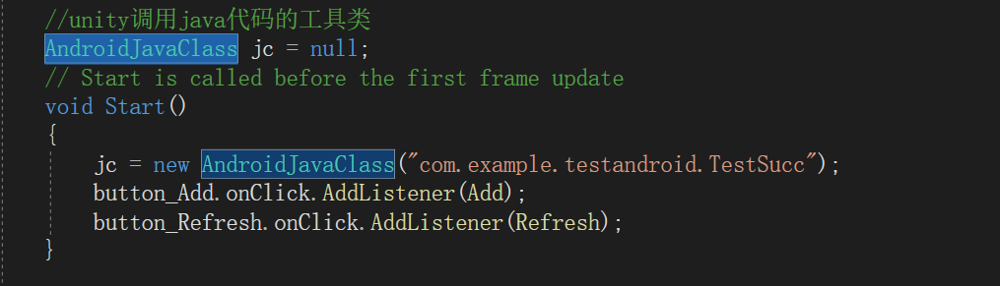
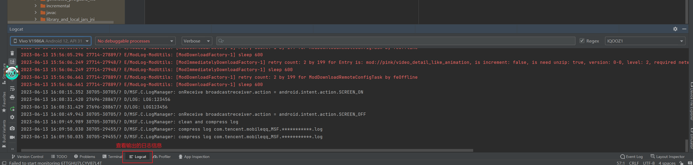

创建安卓秘钥
在unity中创建秘钥常用的有两种方式。
1.通过unity的面板创建，并保存到常用文件夹下（Unity2018及以上）
2.首先打开jdk所在的bin文件夹。控制台命令：keytool -genkey -alias 秘钥库名称 -keyalg RSA -validity 有效时间 -keystore 秘钥库文件名
首先展示第一种操作，先在项目打包设置中的Publishing选项中点击keystore Manager，之后如下图顺序进行操作
操作完成后出现上图的Custom Keystore选项并自动勾选后就代表秘钥添加成功。
通过控制台创建秘钥比较简单
这里要注意，秘钥的时间是按天算的，这里36500就是一百年。以及秘钥要在javabin目录下打开控制台创建，这里我配置了java环境，所以在javabin目录外也能创建。
创建好的秘钥会生成在控制台中的当前目录下。
在Unity中为Android应用添加签名证书可以带来以下好处:
- 1. 使应用能安装到Android设备上运行。
- 2. 允许应用更新并保留用户数据。
- 3. 确保应用来源安全可靠。
- 4. 启用Android新增的某些高级功能。
安卓调试方法概述
真机调试：真机运行app+AS中的LogCat
AVD虚拟机+LogCat（有局限性，因为AVD只支持谷歌内核的x86-64和x86架构，可以采用IL2CPP技术发布）
UnityRemote(调试Unity工程，电脑端可以运行的功能)
模拟器调试（局限性大，只能看看效果）
Unity调用java代码
需要先在unity中创建Plugins文件夹，这个文件夹一般用于存放插件，而我们的java文件也将通过插件的方式存储。
这里的TestSucc就是一个java文件，将java文件导入后unity会自动将其作为插件识别。
随后就需要在C#中声明一个AndroidJavaClass变量，这个变量用来存储java类。
这里通过new的方式创建java的类，类是通过字符串的方式传入。不过需要写出完整的包名，从包名一直到类名。
而调用时则是通过CallStatic函数调用，需要设置一个泛型作为返回类型，然后就是传入参数，第一个参数是方法名的字符串，第二个参数开始才是该方法所需的参数。
但是方法不能再unity中运行，因为当前的unity平台为Windows平台，所以需要打包成apk文件，然后在去安卓环境中运行才能知道结果。
java代码如下
Unity调用Jar包
首先我们需要准备一个jar包，这里通过AndroidStudio进行准备
在AndroidStudio中我们不需要这么多的文件和配置包。所以先将AndroidStudio中的项目改成一个库项目。
随后编写用于测试的Test类，Test类中包含了两个成员变量，一个是静态变量的一个是实例变量
写完测试类后需要对测试类进行编译。
最后要将编译的结果jar包复制到Plugins文件夹下。
这里将jar包移动到Plugins/Android/libs目录下，因为是Android调用所以建立了一个Android目录方便管理。

之后可以随意搭建一点简单的场景用于测试。
场景搭建好后就可以写C#脚本了。这里主要使用两个类：AndroidJavaClass和AndroidJavaObject。这两个类对应静态和动态。
使用方法如下图：
AndroidJavaClass使用方法
AndroidJavaObject使用方法
这里静态方法推荐使用AndroidJavaClass进行调佣，虽然AndroidJavaObject也能调用，但AndroidJavaClass调动静态方法速度要快点。
成员变量不管静态还是动态AndroidJavaObject都要比AndroidJavaClass快
AndroidJavaClass常用方法
| 方法名 | 说明 |
| CallStatic("静态方法名",参数) | 调用java中的静态方法，没有参数就不填 |
| SetStatic<类型>("静态成员变量名",值) | 修改静态成员变量值，泛型里填被修改变量的类型 |
| GetStatic<类型>("静态成员变量名") | 获取静态成员变量值，泛型里填获取变量的类型 |
AndroidJavaObject常用方法
| 方法名 | 说明 |
| CallStatic("方法名",参数) | 调用java中的方法，没有参数就不填 |
| Set<类型>("成员变量名",值) | 修改成员变量值，泛型里填被修改变量的类型 |
| Get<类型>("成员变量名") | 获取成员变量值，泛型里填获取变量的类型 |
Java中调用Unity
想要在java中调用unity中的相关功能我们首先需要先在java中引入相关java包。
这个java包在unity引擎目录下。C:\Program Files\Unity\Hub\Editor\2021.3.18f1c1\Editor\Data\PlaybackEngines\AndroidPlayer\Variations\mono\Release\Classes
在将其引入AndroidStudio中
将其引入后右键添加到包依赖中，由于我这里已经添加过了所以显示的不是添加包依赖按钮
这里我们依旧使用上面的Test.java类
这里传递的参数要正确，其中UserJar是Hierarchy面板中的对象，而GetLog是他身上所挂载的一个UserJar类中的一个方法。
Toast提示信息
由于21版unity的更新，Toast所需的包被移动到了C:\Program Files\Unity\Hub\Editor\2021.3.18f1c1\Editor\Data\PlaybackEngines\AndroidPlayer\Source\com\unity3d\player文件夹下
将这个java类导入AndroidStudio中
继续在Test中写入测试方法
UnityPlayer.currentActivity在现版本中是空的，因为版本的更改赋值用的类被移动走了，所以一开始才要导入UnityPlayerActivity。currentActivity是代表当前场景
另一种方法
这种方式并不是用过java获取当前场景，而是通过unity手动传入。
编译完成后我们需要打开jar包，将其中的Unity3d包删除，因为我们只有在AndroidStudio中需要，unity打包成安卓时会自动为我们加上
将jar导入unity后，就需要在C#中调用。第一种方式就和调用普通的java类一样，通过AndroidJavaObject进行调用。因为这里使用的是非静态的方法。
这里的ShowMsg2则是第二种使用方式，需要我们手动导入unity场景信息
而场景信息我们则是通过这种方式获取，也只是把java中获取unity场景信息的方式挪到了unity中。
连接安卓进行调试
想要在连接手机查看调试信息需要将手机的开发者模式打开，并且在开发者模式中打开USB调试。
随后通过USB连接电脑和手机。
然后再打开电脑上的AndroidStudio，并在AndroidStudio中打开调试信息面板。
我们还可以在调试面板中设置一些信息。
而过滤的标签名就是之前输出日志时所定义的。
将unity打包成Android项目
首先需要将unity打包成Android项目的选项勾选。
之后点击打包并选择一个文件作为项目的存储位置。
再将打包结果的文件夹通过AndroidStudio打开。如果AndroidStudio一直无法加载完成项目可能就是项目的Gradle版本不对，需要在unity查看当前版本是否和AndroidStudio一直。如果不一致则需要在AndroidStudio中修改。